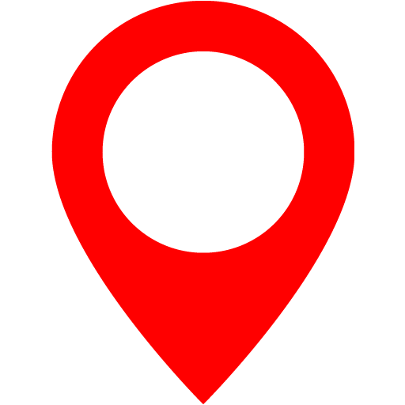
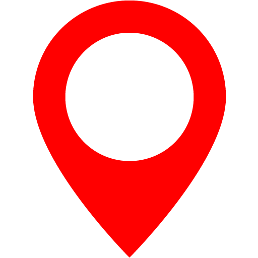

Sound Spatialization
How to use Sound Spatialization
Start of by walking over to where you want your walk to start.
Press reset whith the phone screen facing up and pointing at the direction you wish to go.
Walk and when you reach a location where your heading must change point your phone towards it and create a new point.
Do this untill you have reached the initial point.
Now you can press start and be guided by the *beeps*.
If you hear one in the left or right you must turn towards that side to keep following the correct heading.
When looking at the map there are 3 different types of points, the gold one indicates the user's current position, the red indicates every point that isnt the current point and the blue indicates the point the user currently is on.
 

How Sound Spatialization works
It allows you to set gps points allong your path, which hold information about the angle you must face to reach the next point.
This incorporates the general absolute location provided by gps with the precise relative alpha angle provided by the gyroscope.

Why create Sound Spatialization
and who is it for
We created this website as a proof of concept, because we bellive that with more development time this idea and technologies can help
people with vision impairments of varying levels of severity navigate the world in a more confortable, independent and safe way, be it while running a marathon or walking in a park.